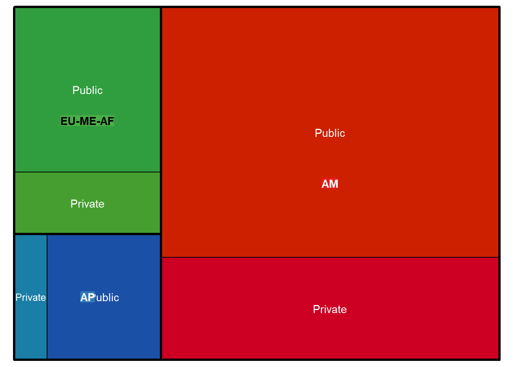

![]()
library(readtext)
textos <- readtext("Programs/")
library(readr)
AU <- read_csv("Accredited Universities.csv")
colnames(AU)[4] <- "SchoolType"
library(tools)
textos$institution <- file_path_sans_ext(textos$doc_id)
textos$Institution <- gsub("^P\\w+(\\.)?", "", textos$institution)
textos$Institution <- gsub("\\.docx$", "", textos$Institution)
textos$Institution <- sub("^ ", "", textos$Institution)
textos$institution <- NULL
library(tidyverse)
textos <- left_join(textos, AU, by = "Institution", keep = FALSE)
Institutions <- data.frame(table(textos$Institution))Formación de Habilidades en Maestrías de Marketing Acreditadas en AACSB
Un Análisis de Red Bipartita con Grafo Exponencial Aleatorio
Resumen
Las necesidades actuales del mercado laboral están incidiendo sobre la oferta de la educación universitaria para promocionar la formación de diversas habilidades en los folletos promocionales que describen el propósito y el perfil de sus egresados. En esta investigación se modela a través de redes bipartitas y grafos exponenciales aleatorios la relación cuantitativa entre las habilidaes y la oferta comercial de maestrías de marketing con estándares de acreditación de la “Association to Advance Collegiate Schools of Business” (AACSB).
Palabras clave
Oferta de Maestrías en Marketing, Programas de Acreditados en AACSB, Redes Bipartitas, Modelos de Grafo Exponencial Aleatorio
1 Introducción
El valor de las habilidades o competencias y su vínculo con el alto rendimiento en el trabajo es una idea bien establecida desde hace décadas (Spencer y Spencer 1993). La investigación sobre las habilidades cuenta con varias aproximaciones conceptuales y metodológicas, entre las que resalta una enfoque que aprovecha el concepto de “datos relacionales” (Butts 2008). Con datos relacionales se pueden analizar cuantitativamente las relaciones multivariadas entre las habilidades y los conocimientos educativos necesarios para ejecutar con destreza las tareas cotidianas de un puesto de trabajo. Esa multiplicidad de relaciones se conceptualizó como un red compleja de información ocupacional (Peterson et al. 2001). Dicha red compleja de información ocupacional ha estimulado una fructífera línea de investigación sobre competencias en varios países, incluyendo a los Estados Unidos de América (Börner et al. 2018; Vista 2020), Hungría (Gadár y Abonyi 2018), o Colombia (García-Chitiva y Correa 2024) por mencionar unos pocos.
En este reporte, usamos el perfil de habilidades asociadas con la posición de gerentes de marketing descrito en la red de información ocupacional disponible en O*NET para medir la cercanía de estas habilidades con la oferta académica de programas de maestría en marketing por parte de universidades que cuentan con la acreditación de la la “Association to Advance Collegiate Schools of Business” (AACSB).
2 Contexto Empírico de los datos
Para investigar la relación entre la oferta académica de los programas de maestría en marketing y el perfil profesional de ejecutivos de marketing según O*NET, aprovechamos la técnica conocida como “búsqueda de palabras clave en contexto” (Benoit et al. 2018). Esta técnica permite extraer de los folletos que promocionan los programas de marketing aquellas palabras o frases que describen las habilidades que debe reunir un profesional de marketing. Para realizar esta búsqueda, sin embargo, primero se hace necesario construir un corpus lingüístico digital en el que se registra palabra por palabra cada folleto de marketing.
2.1 Elaboración del Corpus Lingüístico
Con el muestreo de estos folletos a partir de la información disponible en la página web oficial de la AACSB, procedimos a elaborar un corpus lingüístico de folletos de maestrías en marketing ofrecidas por 81 universidades públicas y 182 privadas, distribuidas en las siguientes tres regiones continentales: “Americas” (AM), “Asia-Pacífico” (AP) y “Europa-Medio Oriente-Africa” (EU-ME-AF). La elaboración del corpus lingüístico fue desarrollada con asistencia de la librería “quanteda” (Benoit et al. 2018).
library(quanteda)
Textos <- corpus(textos$text)
docvars(Textos, "Region") <- textos$Region
docvars(Textos, "Institution") <- textos$Institution
docvars(Textos, "InstitutionType") <- textos$SchoolType
TextosData <- as.data.frame(summary(Textos, n = length(textos$text)))
library(readr)
Inst <- read_csv("GeolocationInstitutions.csv")
library(treemap)
colnames(Inst)[1] <- "School Type"
colnames(Inst)[2] <- "Geolocation"
colnames(Inst)[3] <- "value"
library(treemap)
treemap(Inst,
index=c("Geolocation", "School Type"),
vSize="value",
vColor = "School Type",
type="index",
title = "",
algorithm = "pivotSize",
mirror.x = TRUE,
mirror.y = FALSE,
palette = "Set1")
Para la elaboración automatizada del corpus lingüístico se procedió a tokenizar palabra por palabra cada documento muestreado, removiendo números, signos de puntuación, direcciones URL y simbólos alfanuméricos para depurar la muestra de textos con la remoción de palabras comunes como artículos, adjetivos y conectores que no aportan información semántica relevante a este contexto.
Programs <- tokens(Textos,
remove_numbers = TRUE,
remove_punct = TRUE,
remove_url = TRUE,
remove_symbols = TRUE) %>%
tokens_remove(stopwords("english"))2.2 Construcción de diccionario de habilidades
Llegados a este punto, pasamos a desarrollar un diccionario ad-hoc de habilidades que reflejen las habilidades del ejecutivo de marketing que describe O*NET.
s1 <- data.frame(kwic(Programs, pattern = c(phrase("active learning"),
phrase("new information"),
phrase("future problem solving"),
phrase("future decision-making"),
phrase("implication"),
phrase("implications"),
phrase("current problems"),
phrase("current solutions"),
phrase("strategic marketing"))))
s1$Competence <- "Active Learning"
s1$SkillCode <- "S1"
s2 <- data.frame(kwic(Programs, pattern = c(phrase("active listening"),
phrase("listening skills"),
phrase("effective listening"),
phrase("attentive listening"),
phrase("listen actively"),
phrase("understand others"),
phrase("engaged listening"),
phrase("client insights"),
phrase("responsive listening"),
phrase("listening to feedback"),
phrase("customer feedback"),
phrase("listening to clients"),
phrase("mindfulness"),
phrase("understanding"),
phrase("information retention"),
phrase("paraphrasing"))))
s2$Competence <- "Active Listening"
s2$SkillCode <- "S2"
s3 <- data.frame(kwic(Programs, pattern = c(phrase("critical thinking"),
phrase("think critically"),
phrase("critical analysis"),
phrase("reasoning skills"),
phrase("analytical thinking"),
phrase("evaluative thinking"),
phrase("critical evaluation"),
phrase("strategic analysis"),
phrase("problem analysis"),
phrase("critical problem solving"),
phrase("analytical reasoning"),
phrase("evaluating information"),
phrase("argumentation"),
phrase("logic"),
phrase("reasoning"),
phrase("complex problem-solving"))))
s3$Competence <- "Critical Thinking"
s3$SkillCode <- "S3"
s4 <- data.frame(kwic(Programs, pattern = c(phrase("reading comprehension"),
phrase("written sentences"),
phrase("understanding documents"),
phrase("work-related documents"),
phrase("read"),
phrase("reading communications"),
phrase("understanding texts"))))
s4$Competence <- "Reading Comprehension"
s4$SkillCode <- "S4"
s5 <- data.frame(kwic(Programs, pattern = c(phrase("social perception"),
phrase("empathy"),
phrase("understanding others"),
phrase("social awareness"),
phrase("social sensitivity"),
phrase("others reactions"),
phrase("social behavior"))))
s5$Competence <- "Social Perceptiveness"
s5$SkillCode <- "S5"
s6 <- data.frame(kwic(Programs, pattern = c(phrase("oral communication"),
phrase("verbal communication"),
phrase("public speaking"),
phrase("presentation skills"),
phrase("speak confidently"),
phrase("effective speaking"),
phrase("presentation delivery"),
phrase("communication proficiency"),
phrase("communicate effectively"),
phrase("verbal presentations"),
phrase("oral presentations"),
phrase("elocution"),
phrase("storytelling"),
phrase("speaking"),
phrase("rapport building"),
phrase("intercultural communication"),
phrase("global communication"))))
s6$Competence <- "Speaking"
s6$SkillCode <- "S6"
s7 <- data.frame(kwic(Programs, pattern = c(phrase("decision making"),
phrase("making decisions"),
phrase("judgment skills"),
phrase("decisive action"),
phrase("evaluate options"),
phrase("choose solutions"),
phrase("decision strategies"),
phrase("strategic decision making"),
phrase("decisive judgment"),
phrase("business decision making"),
phrase("executive decision making"),
phrase("critical judgment"),
phrase("risk assessment"),
phrase("intuition"),
phrase("experience"),
phrase("confidence"),
phrase("accountability"),
phrase("leadership"))))
s7$Competence <- "Judgment and Decision Making"
s7$SkillCode <- "S7"
s8 <- data.frame(kwic(Programs, pattern = c(phrase("monitoring"),
phrase("assessing performance"),
phrase("self-assessment"),
phrase("corrective action"),
phrase("make improvement"),
phrase("organization performance"),
phrase("individual performance"),
phrase("enhance"),
phrase("enhancement"))))
s8$Competence <- "Monitoring"
s8$SkillCode <- "S8"
s9 <- data.frame(kwic(Programs, pattern = c(phrase("persuading"),
phrase("persuading others"),
phrase("persuading skills"),
phrase("influencing others"),
phrase("convincing others"),
phrase("selling ideas"),
phrase("effective persuasion"),
phrase("persuasive communication"),
phrase("influence marketing"),
phrase("marketing influence"),
phrase("persuasive skills"),
phrase("persuasive strategies"),
phrase("social influence"),
phrase("argumentation"),
phrase("appealing to emotions"),
phrase("motivation"),
phrase("credibility"),
phrase("trust"),
phrase("convince"),
phrase("persuasion"),
phrase("change behavior"),
phrase("change minds"),
phrase("persuade"))))
s9$Competence <- "Persuasion"
s9$SkillCode <- "S9"
s10 <- data.frame(kwic(Programs, pattern = c(phrase("solving complex problems"),
phrase("problem solving"),
phrase("resolve issues"),
phrase("troubleshooting"),
phrase("conflict resolution"),
phrase("creative solutions"),
phrase("address challenges"),
phrase("problem resolution"),
phrase("overcome obstacles"),
phrase("complex problem solving"),
phrase("strategic problem solving"),
phrase("problem analysis"),
phrase("root cause identification"),
phrase("solution generation"),
phrase("solution evaluation"),
phrase("solution implementation"),
phrase("monitoring and evaluation"),
phrase("adaptability"),
phrase("flexibility"),
phrase("persistence"))))
s10$Competence <- "Complex Problem Solving"
s10$SkillCode <- "S10"
s11 <- data.frame(kwic(Programs, pattern = c(phrase("negotiation"),
phrase("negotiating skills"),
phrase("bargaining"),
phrase("reconcile differences"),
phrase("deal making"),
phrase("conflict resolution"),
phrase("mediate"),
phrase("negotiation tactics"),
phrase("win-win negotiation"),
phrase("negotiation strategies"),
phrase("negotiation skills"),
phrase("business negotiation"),
phrase("contract negotiation"),
phrase("price negotiation"),
phrase("deal negotiation"),
phrase("conflict negotiation"),
phrase("intercultural negotiation"),
phrase("global negotiation"))))
s11$Competence <- "Negotiation"
s11$SkillCode <- "S11"
s12 <- data.frame(kwic(Programs, pattern = c(phrase("coordination"),
phrase("coordinat*"),
phrase("adjusting actions"),
phrase("coordinate behavior"),
phrase("cooperate with others"),
phrase("cooperat*"),
phrase("collaborat*"),
phrase("coordinate tasks"),
phrase("team coordination"),
phrase("organizational skills"),
phrase("work together"),
phrase("task management"),
phrase("coordinating activities"),
phrase("inter-department coordination"),
phrase("coordinated efforts"),
phrase("team coordination strategies"),
phrase("collaborative coordination"),
phrase("project management"),
phrase("effective communication"),
phrase("delegation"),
phrase("conflict resolution"),
phrase("leadership"),
phrase("tracking"),
phrase("evaluation"),
phrase("collaborate with others"))))
s12$Competence <- "Coordination"
s12$SkillCode <- "S12"
s13 <- data.frame(kwic(Programs, pattern = c(phrase("systems evaluation"),
phrase("identifying measures"),
phrase("identifying indicators"),
phrase("system performance"),
phrase("needs"),
phrase("improve performance"),
phrase("correct performance"),
phrase("goals of the system"),
phrase("systems thinking"),
phrase("systemic"))))
s13$Competence <- "Systems Evaluation"
s13$SkillCode <- "S13"
s14 <- data.frame(kwic(Programs, pattern = c(phrase("time management"),
phrase("timing"),
phrase("managing one's own time"),
phrase("managing time of others"),
phrase("punctual"),
phrase("on time"),
phrase("time management skills"),
phrase("organize time"),
phrase("efficient scheduling"),
phrase("prioritize tasks"),
phrase("time optimization"),
phrase("schedule management"),
phrase("task prioritization"),
phrase("effective time management"),
phrase("time management strategies"),
phrase("organization"),
phrase("planning"),
phrase("delegation"),
phrase("multitasking"),
phrase("stress management"),
phrase("productivity"),
phrase("efficiency"),
phrase("self-discipline"),
phrase("timely"),
phrase("punctuality"))))
s14$Competence <- "Time Management"
s14$SkillCode <- "S14"
s15 <- data.frame(kwic(Programs, pattern = c(phrase("supervision"),
phrase("supervise"),
phrase("supervising"),
phrase("management"),
phrase("manage personnel"),
phrase("manage staff"),
phrase("team leadership"),
phrase("lead teams"),
phrase("employee supervision"),
phrase("staff management"),
phrase("effective supervision"),
phrase("motivation"),
phrase("coaching"),
phrase("team development"),
phrase("performance management"),
phrase("discipline"),
phrase("ethics"),
phrase("change management"))))
s15$Competence <- "Management of Personnel Resources"
s15$SkillCode <- "S15"
s16 <- data.frame(kwic(Programs, pattern = c(phrase("operation analysis"),
phrase("analyzing needs"),
phrase("analysing needs"),
phrase("product requirement"),
phrase("create designs"),
phrase("designing products"),
phrase("product design"),
phrase("marketing products"),
phrase("design of products"))))
s16$Competence <- "Operations Analysis"
s16$SkillCode <- "S16"
s17 <- data.frame(kwic(Programs, pattern = c(phrase("systems analysis"),
phrase("determining how"),
phrase("software"),
phrase("systems should work"),
phrase("outcome changes"),
phrase("system conditions"),
phrase("system functioning"),
phrase("working system"),
phrase("system operations"))))
s17$Competence <- "Systems Analysis"
s17$SkillCode <- "S17"
s18 <- data.frame(kwic(Programs, pattern = c(phrase("written communication"),
phrase("writing skills"),
phrase("professional writing"),
phrase("report writing"),
phrase("business writing"),
phrase("create marketing content"),
phrase("marketing reports"),
phrase("content creation"),
phrase("marketing copywriting"),
phrase("marketing messages"),
phrase("written marketing materials"),
phrase("writing for marketing"),
phrase("persuasive writing"),
phrase("creative writing"),
phrase("proposal writing"),
phrase("copywriting"),
phrase("web content writing"),
phrase("blogging"),
phrase("social media writing"))))
s18$Competence <- "Writing"
s18$SkillCode <- "S18"
s19 <- data.frame(kwic(Programs, pattern = c(phrase("learning strategies"),
phrase("learning strategy"),
phrase("teaching strategy"),
phrase("teaching strategies"),
phrase("training"),
phrase("instructional methods"),
phrase("appropriate learning"),
phrase("teaching new things"),
phrase("learning new things"),
phrase("selecting and using"),
phrase("learning procedures"))))
s19$Competence <- "Learning Strategies"
s19$SkillCode <- "S19"
s20 <- data.frame(kwic(Programs, pattern = c(phrase("service orientation"),
phrase("customer service"),
phrase("client service"),
phrase("service skills"),
phrase("customer satisfaction"),
phrase("service excellence"),
phrase("client relations"),
phrase("customer care"),
phrase("service delivery"),
phrase("customer-centric approach"),
phrase("service-oriented"),
phrase("customer-focused"),
phrase("customer loyalty"),
phrase("positive attitude"),
phrase("proactivity"),
phrase("teamwork"))))
s20$Competence <- "Service Orientation"
s20$SkillCode <- "S20"
s21 <- data.frame(kwic(Programs, pattern = c(phrase("instructing"),
phrase("teaching others"),
phrase("how to do"),
phrase("explain to others"),
phrase("explaining"),
phrase("teaching"),
phrase("explanation"),
phrase("how to deal with"),
phrase("how to solve"))))
s21$Competence <- "Instructing"
s21$SkillCode <- "S21"
s22 <- data.frame(kwic(Programs, pattern = c(phrase("financial resources"),
phrase("money management"),
phrase("financial management"),
phrase("assets"),
phrase("cash"),
phrase("cash flow"),
phrase("ROI"),
phrase("investment"),
phrase("liabilities"),
phrase("expenditure"),
phrase("purchase"),
phrase("profit*"),
phrase("business analytics"),
phrase("acquisition"),
phrase("budget*"),
phrase("costs"))))
s22$Competence <- "Management of Financial Resources"
s22$SkillCode <- "S22"
s23 <- data.frame(kwic(Programs, pattern = c(phrase("mathematics"),
phrase("mathematical thinking"),
phrase("maths"),
phrase("statistics"),
phrase("data analytics"),
phrase("solve problems"),
phrase("calculation"),
phrase("abstract thinking"))))
s23$Competence <- "Mathematics"
s23$SkillCode <- "S23"
s24 <- data.frame(kwic(Programs, pattern = c(phrase("material resources"),
phrase("equipment*"),
phrase("supplies"),
phrase("facilities"),
phrase("pop material"),
phrase("merch"),
phrase("merchandise"),
phrase("materials"))))
s24$Competence <- "Management of Material Resources"
s24$SkillCode <- "S24"
s25 <- data.frame(kwic(Programs, pattern = c(phrase("programming"),
phrase("computer programs"),
phrase("object oriented programming"),
phrase("SQL"),
phrase("no-code"),
phrase("Excel"),
phrase("MySQL"),
phrase("Python"),
phrase("STATA"),
phrase("AWS"),
phrase("Salesforce"),
phrase("Google"),
phrase("data analytics"),
phrase("SPSS"))))
s25$Competence <- "Programming"
s25$SkillCode <- "S25"
s26 <- data.frame(kwic(Programs, pattern = c(phrase("quality"),
phrase("performance quality"),
phrase("quality control"),
phrase("quality test"),
phrase("quality assessment"),
phrase("service inspection"),
phrase("quality standard"),
phrase("quality analysis"),
phrase("product inspection"))))
s26$Competence <- "Quality Control Analysis"
s26$SkillCode <- "S26"
s27 <- data.frame(kwic(Programs, pattern = c(phrase("operations monitoring"),
phrase("watch gauges"),
phrase("dashboard"),
phrase("wacth dials"),
phrase("kpi"),
phrase("control panel"),
phrase("indicator*"),
phrase("watch dashboards"),
phrase("machine functioning"),
phrase("machine working"))))
s27$Competence <- "Operations Monitoring"
s27$SkillCode <- "S27"
s28 <- data.frame(kwic(Programs, pattern = c(phrase("sciences"),
phrase("data science"),
phrase("scientific thinking"),
phrase("scientific method"),
phrase("scientific analysis"),
phrase("scientific methods"),
phrase("scientific solutions"))))
s28$Competence <- "Science"
s28$SkillCode <- "S28"
s29 <- data.frame(kwic(Programs, pattern = c(phrase("technology design"),
phrase("technology adaptation"),
phrase("technology generation"),
phrase("digital technology"),
phrase("artificial intelligence"),
phrase("user needs"),
phrase("technological solution"),
phrase("technological equipment"),
phrase("technology training"),
phrase("technology deployment"))))
s29$Competence <- "Technology Design"
s29$SkillCode <- "S29"
df_list <- mget(paste0("s", 1:29))
SS <- do.call(rbind, df_list)
patrones <- data.frame(table(SS$pattern))
Patrones <- data.frame(table(SS$Competence))
SS <- merge(SS, TextosData, by.x = "docname", by.y = "Text")2.3 Construcción de la matriz término-documento
Con la construcción del diccionario de habilidades, ahora es posible pasar a construir una matriz rectangular término-documento (Benoit et al. 2018). Esta matriz término-documento está compuesta por un número n de filas y un número c de columnas, donde las habilidades se disponen en filas y los programas en columnas y los valores en las celdas de tal matriz solo pueden tener dos valores posibles (i.e., 1 para indicar que la habilidad está explícitamente mencionada en el folleto que promociona el programa o cero para indicar lo contrario).
Network <- SS[c(8,1,10:15)]
rm(list=setdiff(ls(), c("Network", "SS")))
Network$Competence <- tolower(Network$Competence)
network <- Network[!duplicated(Network[c(1,2,4,6,7)]),]2.4 Configuración de la matriz término-documento como red bipartita
Ahora nuestro próximo paso consiste en configurar la matriz término-documento como una red bipartita para lo cual se necesita usar la librería igraph (Csárdi et al. 2024). A continuación mostramos una fracción de dicha matriz al revelar las primeras cinco filas y las primeras cinco columnas.
library(igraph)
bn2 <- graph_from_data_frame(network,directed=FALSE)
V(bn2)$type <- bipartite_mapping(bn2)$type
BiM <- as_biadjacency_matrix(bn2, types = V(bn2)$type, names = TRUE)
BiM[1:5,1:5] text1 text10 text100 text101 text102
active learning 1 1 1 0 0
active listening 1 0 1 0 1
management of personnel resources 1 1 1 1 1
management of financial resources 1 0 1 1 1
service orientation 1 0 0 0 03 Especificación y modelación de red bipartita como grafo aleatorio
Llegados a este punto, ahora pasamos a definir la red bipartita como un grafo aleatorio. La hipótesis básica de este grafo aleatorio implica que el número de conexiones entre habilidades y programas es “esperable por azar”. Este número, en terminología de grafos exponenciales aleatorios, está representado por el concepto de densidad de red, la cual se obtiene con el uso de la librería network (Butts 2008) y la librería ergm (Krivitsky et al. 2023).
library(network)
red <- network(BiM,
directed = FALSE,
hyper = FALSE,
loops = FALSE,
multiple = FALSE,
bipartite = TRUE)
is.network(red)[1] TRUElibrary(network)
library(ergm)
library(coda)
sna::gden(red)[1] 0.05231354En esta red bipartita, las habilidades son definidas como nodos de la primera partición y los folletos promocionales de los programas de marketing se definen como los nodos de la segunda partición. A esta red se le pueden adjuntar atributos a dichos nodos de la siguiente manera.
Los nodos de la primera partición (habilidades) tienen un atributo llamado OnetImportance que refleja la importancia de dicha habilidad según la red de información ocupacional O*NET. Otro atributo aplica para los nodos de la segunda partición (programas) se llama SchoolType para reflejar si el programa proviene de una universidad pública o privada. Otro atributo llamado Region también aplica para la segunda partición (programas) para reflejar si el programa es de una universidad ubicada geográficamente en la región Asia-Pacífico, Americas, o Europa-Medio Oriente-Africa.
ProgramAttributes <- TextosData[TextosData$Text %in% seleccionados, ]
SkillAttributes <- data.frame(Competence = unique(SS$Competence))
library(readr)
ONET_SkillsImportance <- read_csv("ONET_SkillsImportance.csv")
SkillAttributes <- merge(SkillAttributes, ONET_SkillsImportance, by.x = "Competence", by.y = "Skill", all.x = TRUE)
set.vertex.attribute(red, "OnetImportance", SkillAttributes$Importance)
OnetImportance <- data.frame(OnetImportance = get.vertex.attribute(red, "OnetImportance"))
OnetImportance$OnetImportance[29:286] <- 0
SchoolType <- data.frame(SchoolType = c(rep(0, 28), ProgramAttributes$InstitutionType))
Region <- data.frame(Region = c(rep(0,28), ProgramAttributes$Region))
set.vertex.attribute(red, "SchoolType", SchoolType$SchoolType)
set.vertex.attribute(red, "OnetImportance", OnetImportance$OnetImportance)
set.vertex.attribute(red, "Region", Region$Region)La red bipartita queda entonces conformada con 287 nodos, distribuidos en 29 nodos para la primera partición (habilidades) y 258 nodos para la segunda partición (programas) conectados a través de 2147 aristas.
red Network attributes:
vertices = 287
directed = FALSE
hyper = FALSE
loops = FALSE
multiple = FALSE
bipartite = 29
total edges= 2147
missing edges= 0
non-missing edges= 2147
Vertex attribute names:
OnetImportance Region SchoolType vertex.names
Edge attribute names not shown 4 Contraste de Hipótesis sobre la Conectividad de la Red
Nuestro primer contraste de hipótesis supone descartar la idea de que la conexión entre habilidades y programas ocurre por azar. En otras palabras, debemos conocer si el total de conexiones está muy por encima o muy por debajo de lo que puede esperarse por azar.
set.seed(1107)
model0 <- ergm(red ~ edges, control = control.ergm(
MCMC.burnin = 10000,
MCMC.interval = 100
))
summary(model0)Call:
ergm(formula = red ~ edges, control = control.ergm(MCMC.burnin = 10000,
MCMC.interval = 100))
Maximum Likelihood Results:
Estimate Std. Error MCMC % z value Pr(>|z|)
edges -0.91022 0.02556 0 -35.62 <1e-04 ***
---
Signif. codes: 0 '***' 0.001 '**' 0.01 '*' 0.05 '.' 0.1 ' ' 1
Null Deviance: 10372 on 7482 degrees of freedom
Residual Deviance: 8969 on 7481 degrees of freedom
AIC: 8971 BIC: 8978 (Smaller is better. MC Std. Err. = 0)Este primer modelo debe considerarse un modelo de línea base ya que solo incluye el término edges, lo que implica que la probabilidad de una conexión entre dos nodos es constante en toda la red. El coeficiente estimado para edges es -0.88529, lo que indica una tendencia negativa a formar enlaces (por debajo de lo esperado por azar). Es esencial interpretar este coeficiente en conjunto con otros términos del modelo (en modelos posteriores). El coeficiente es altamente significativo (p-valor < 0.001), lo que sugiere que el número de enlaces es diferente de lo esperado por casualidad. La desviación nula y residual indican cuánto se reduce la falta de ajuste del modelo en comparación con un modelo nulo sin predictores. Los valores de AIC (Akaike Information Criterion) y BIC (Bayesian Information Criterion) son medidas de ajuste del modelo, y mientras más cercanos a cero tanto mejor el ajuste del modelo. Estos dos valores los usaremos para comparar este primer modelo que sirve como línea base para incorporar otros predictores.
Referencias
Benoit, K., K. Watanabe, H. Wang, P. Nulty, A. Obeng, S. Müller, y A. Matsuo. 2018. «quanteda: An R package for the quantitative analysis of textual data». Journal of Open Source Software 3 (30): 774. https://doi.org/10.21105/joss.00774.
Börner, K., O. Scrivner, M. Gallant, S. Ma, X. Liu, K. Chewning, L. Wu, y J. A. Evans. 2018. «Skill discrepancies between research, education, and jobs reveal the critical need to supply soft skills for the data economy». Proceedings of the National Academy of Sciences of the United States of America 115 (50): 12630-37. https://doi.org/10.1073/pnas.1804247115.
Butts, C. T. 2008. «network: a Package for Managing Relational Data in R.» Journal of Statistical Software 24 (2). https://doi.org/10.18637/jss.v024.i02.
Csárdi, G., T. Nepusz, V. Traag, S. Horvát, F. Zanini, D. Noom, y K. Müller. 2024. igraph: Network Analysis and Visualization in R. https://doi.org/10.5281/zenodo.7682609.
Gadár, L., y J. Abonyi. 2018. «Graph configuration model based evaluation of the education-occupation match». PloS One 13 (3): e0192427. https://doi.org/10.1371/journal.pone.0192427.
García-Chitiva, M. d. P., y J. C. Correa. 2024. «Soft skills centrality in graduate studies offerings». Studies in Higher Education 49 (6): 956-80. https://doi.org/10.1080/03075079.2023.2254799.
Krivitsky, Pavel N., David R. Hunter, Martina Morris, y Chad Klumb. 2023. «ergm 4: New Features for Analyzing Exponential-Family Random Graph Models». Journal of Statistical Software 105 (6): 1-44. https://doi.org/10.18637/jss.v105.i06.
Peterson, N. G., M. D. Mumford, W. C. Borman, P. R. Jeanneret, E. A. Fleishman, K. Y. Levin, M. A. Campion, et al. 2001. «Understanding work using the Occupational Information Network (O* NET): Implications for practice and research». Personnel Psychology 54 (2): 451-92.
Spencer, L. M., y S. M. Spencer. 1993. Competence at Work: Models for Superior Performance. New York: John Wiley & Sons, Inc.
Vista, A. 2020. «Data-Driven Identification of Skills for the Future: 21st-Century Skills for the 21st-Century Workforce». Sage Open 10 (2): 2158244020915904. https://doi.org/10.1177/2158244020915904.